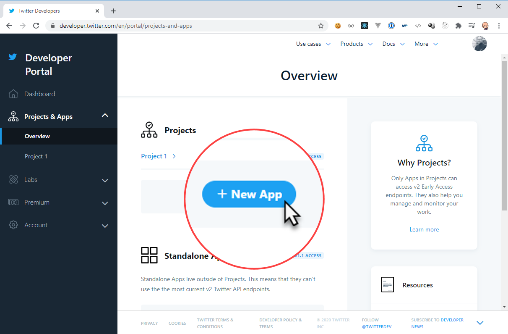
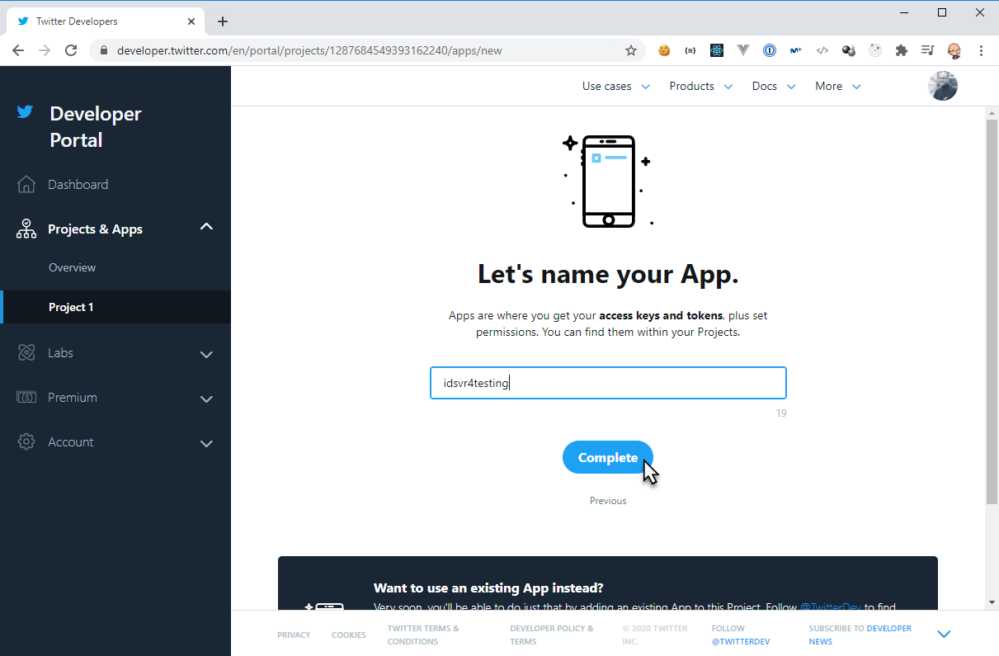
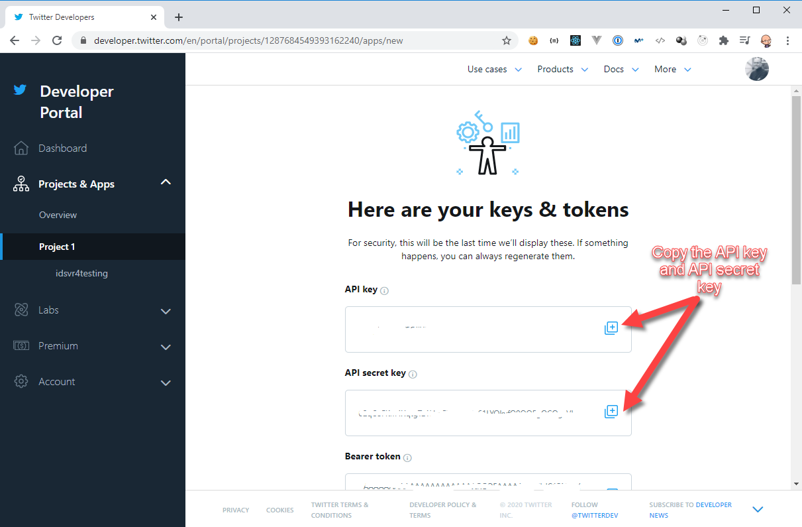
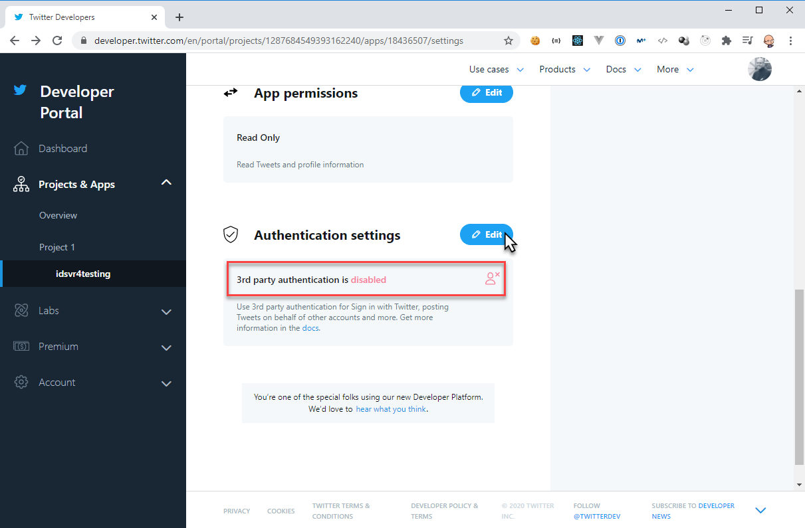
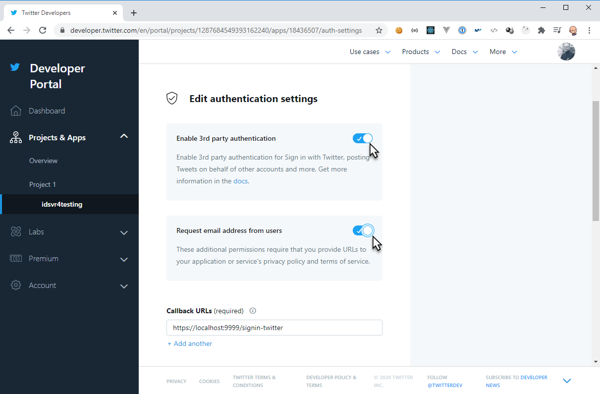
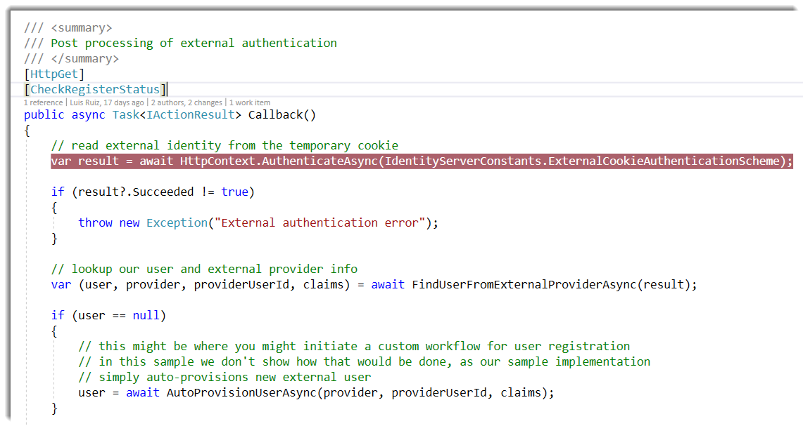
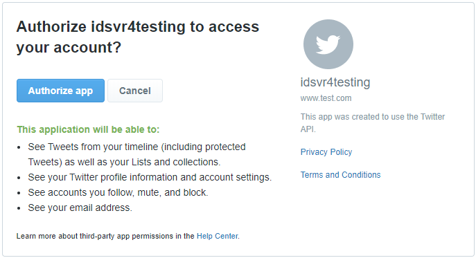
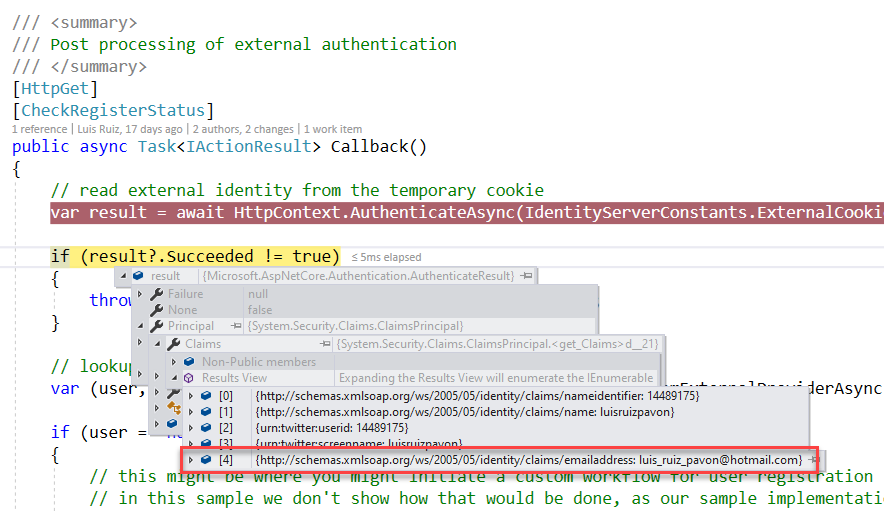

ASP.NET Core adds support for Google, Twitter, Facebook and Microsoft accounts. If you need another OAuth provider, there are a repo with an OAuth community contribution providers here. IdentityServer4 adds supports for these external authentication and it’s quite easy. You can review the official documentation in this link.
In this post I’m going to put focus on how to retrieve User’s email from Twitter external authentication in IdentityServer4 using ASP.NET Core external authentication.
Adding Twitter support
To be able to use Twitter for external authentication, you need to register a new app using Twitter’s Developer Portal and follow these steps:
Add a new app:

Choose your app’s name and click on Complete button:

Copy the “API key” and “API secret key” to configure Twitter authentication handler in our DI later:

By default, “3rd party authentication” is disabled, click on the Edit button:

We need to check “Enable 3rd party authentication” and “Request email address from users”, fill the “Callback URLs” with your IdentityServer4 url https://host:port/signin-twitter and “Website URL” and also we need to fill “Terms of service” and “Privacy policy” because we have checked “Request email address from users” before.

Next, we need to configure IdentityServer4 to use Twitter authentication. First you need to install this NuGet package Microsoft.AspNetCore.Authentication.Twitter
Package Manager
Install-Package Microsoft.AspNetCore.Authentication.Twitter -Version 3.1.6
.NET CLI
dotnet add package Microsoft.AspNetCore.Authentication.Twitter --version 3.1.6
Start by adding the Twitter authentication handler in your ConfigureServices in Startup
services
.AddAuthentication()
.AddTwitter(options =>
{
options.SignInScheme = IdentityServerConstants.ExternalCookieAuthenticationScheme;
options.ConsumerKey = "API key";
options.ConsumerSecret = "API secret key";
options.RetrieveUserDetails = true;
});
As you can see, we set the property RetrieveUserDetails to true because based on the documentation this property enables the retrieval user details during the authentication process, including e-mail addresses. Retrieving e-mail addresses requires special permissions from Twitter Support on a per application basis. The default is false. See this link for more information.
It’s time to check if our Twitter authentication works correctly. We need to add a breakpoint into the Callback method in the ExternalController.cs file:

Run the application and click on Twitter’s login button and the consent screen should be appear:

Once you authorized the app, you should be redirect to the IdentityServer4 Callback method in the ExternalController.cs file and received the email claim in the identity claims collection:

Conclusion
In this post I’ve tried to show how to retrieve an user’s email from Twitter authentication in our IdentityServer4 because by default is not activated in the apps and some time people think is related with some scopes or some malfunctioning behavior of the authentication handler.


Comments